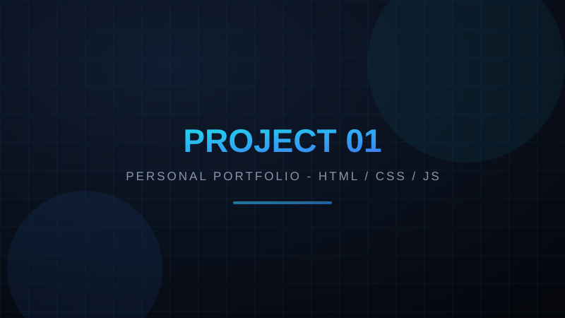
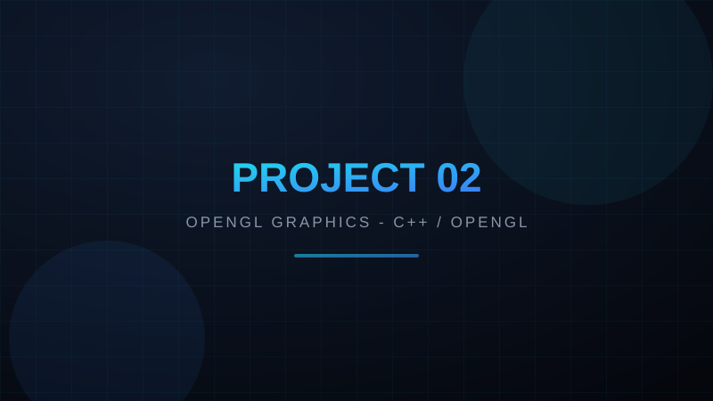
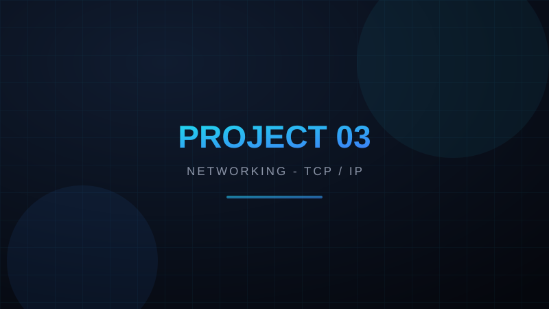
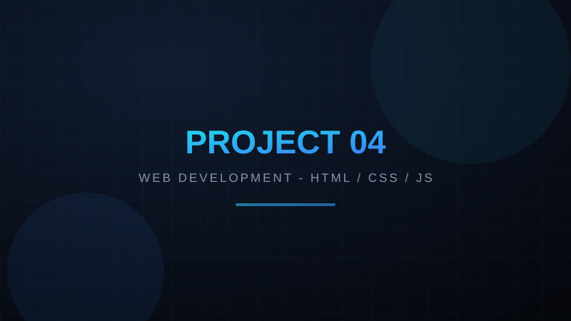

HTML
Struktur semantic website yang rapi dan aksesibel.
90%
Saya adalah mahasiswa Informatika yang tertarik pada pengembangan website, pemrograman, desain, dan teknologi digital. Saya terus belajar dan mengembangkan kemampuan untuk membuat solusi digital yang kreatif dan bermanfaat.
Saya merupakan mahasiswa Informatika yang memiliki ketertarikan pada teknologi, pemrograman, desain visual, dan pengembangan website. Dengan latar belakang pendidikan di bidang Animasi, saya memiliki ketertarikan pada perpaduan antara teknologi dan kreativitas.
Saat ini saya terus mengembangkan kemampuan dalam HTML, CSS, JavaScript, C++, OpenGL, jaringan komputer, dan berbagai teknologi lainnya.
Download CVStruktur semantic website yang rapi dan aksesibel.
Styling modern, layout responsive, dan animasi.
Interaktivitas website dan logika pemrograman.
Pemrograman dasar, logika, dan struktur data.
Grafik komputer dan rendering 3D dengan C++.
Jaringan komputer, konfigurasi, dan protokol TCP/IP.
Merancang antarmuka yang intuitif dan menarik.
Desain visual dan animasi dari latar belakang SMK.

Animasi berbentuk hati yang dibuat menggunakan HTML, CSS, dan JavaScript.
Live Demo Source Code


Jurusan Animasi
Program Studi Informatika • Kelas B
Started learning creative design and animation.
Developed interest in programming and technology.
Started studying Informatics.
Developing web, graphics, networking, and programming skills.